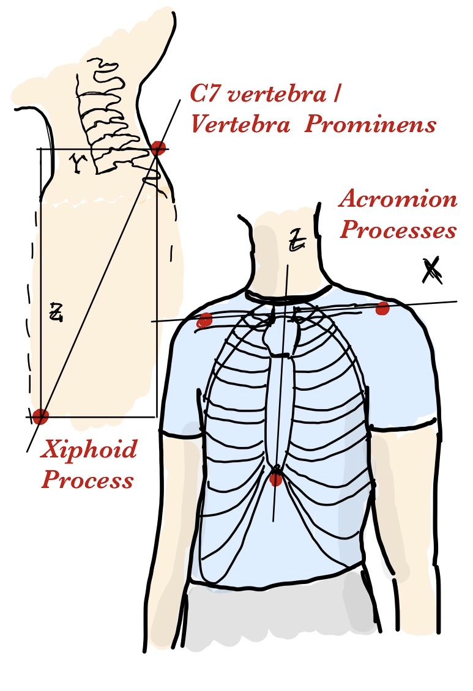

A Standardized Framework for Sensor Placement in Human Motion Capture and Wearable Applications
Published on arXiv: 2412.21159
By: Seyed Yahya Shirazi1*, Julius Welzel2*, Sein Jeung3,4*, and Lara Godbersen2
1. Swartz Center for Computational Neuroscience, Institute for Neural Computation, University of California San Diego, La Jolla, CA, USA
2. Kiel University, Kiel, Germany
3. Technical University of Berlin, Berlin, Germany.
4. Max Planck Institute for Human Cognitive and Brain Sciences, Leipzig, Germany.
* Equal contribution.
Abstract
The proliferation of wearable sensors and monitoring technologies has created an urgent need for standardized sensor placement protocols. While existing standards like SENIAM address specific applications, no comprehensive framework spans different sensing modalities and applications. We present a unified sensor placement standard that ensures the reproducibility and transferability of human movement and physiological data across various systems and research domains. Our framework provides precise anatomical landmarks, coordinate systems, and placement protocols with defined precision levels, compatible with existing data-sharing standards such as the Brain Imaging Data Structure (BIDS) and Heirechciacal Event Descriptors (HED). This framework aims to enhance data quality, reproducibility, and interoperability in applications ranging from lab-based clinical biomechanics to continuous health monitoring in everyday life.
Introduction
The measurement of human movement and physiological signals is fundamental to fields ranging from biomechanics and clinical rehabilitation to continuous health monitoring and virtual reality. Technological advancements in motion capture systems, inertial sensors, and wearable devices have expanded analysis beyond traditional laboratory settings. Standardization of sensor placement practices is essential to improve data quality, reproducibility, and interoperability across these diverse applications.
The impact of sensor placement variation on data quality is well-documented. In biomechanics research, studies have shown that even small changes in sensor position can significantly affect measurement outcomes. In electromyography (EMG), electrode placement variations of just 2-3 cm can lead to signal amplitude changes of up to 50% and altered muscle activation patterns [1]. Similar effects have been observed with inertial measurement units (IMUs), where placement variations can substantially impact acceleration and angular velocity measurements during dynamic movements [2]. The same applies to Optical Motion Capture, where deviations from the predefined marker positions affect gait detection accuracy [3].
Precise sensor placement is critical beyond movement analysis. In electrocardiography (ECG), electrode positioning directly affects waveform morphology and diagnostic accuracy, with small deviations potentially leading to misinterpretation of cardiac conditions [4-6]. Continuous glucose monitoring systems require consistent sensor placement to maintain measurement accuracy and reduce variability. Temperature monitoring, particularly for early fever detection or athletic performance, depends heavily on sensor location due to significant variations in skin temperature across different body regions. Emerging technologies like sweat-based biochemical sensors also necessitate standardized placement to account for regional variations in sweat gland density and composition.
Current standards for sensor placement, such as SENIAM for EMG [7] or the Mason-Likar configuration for ECG [8,9], while valuable, are limited and not comprehensive for modern sensing modalities. Moreover, these standards are often not sufficiently implemented in practice [10,11], failing to incorporate a wider user base with varying levels of expertise in anatomy, biomechanics, and biosensors.
The emergence of consumer wearables and virtual reality applications has further highlighted the limitations of current standards. These technologies often combine multiple sensing modalities—motion, heart rate, temperature, and other physiological parameters—requiring consistent sensor placement for reliable long-term monitoring and accurate data collection. The growing integration of these technologies demands a unified approach to sensor placement that accommodates different measurement contexts while maintaining precision and reproducibility.
The need for a comprehensive sensor placement standard is increasingly pressing with the rise of large-scale data-sharing initiatives and the use of machine-learning techniques in health monitoring and movement analysis. These applications require consistent and well-documented data collection protocols for meaningful comparisons and reliable results. Current data-sharing standards like BIDS [12] and HED [13] provide robust frameworks for data organization but lack specific guidelines for sensor placement across the full range of human monitoring applications.
We present a unified sensor placement framework addressing these challenges through a comprehensive system of anatomical landmarks, coordinate systems, and placement protocols. Our standard defines anatomical reference points and coordinate systems for body segments [14], establishes a hierarchical system of reference frames for different measurement contexts, and provides quantifiable levels of placement precision with associated uncertainty estimates. The framework is technology- and specification-agnostic, accommodating various sensing modalities while maintaining compatibility with existing data-sharing standards. This framework will also allow existing records to be annotated with the proposed framework.
The following sections detail our proposed standard, beginning with fundamental definitions and proceeding to specific placement protocols for different body segments and sensing modalities. We provide guidance on precision levels and documentation requirements, concluding with recommendations for implementation and validation. This framework represents a significant step toward standardizing sensor placement across the broader field of human biosensing, from traditional biomechanics applications to emerging technologies in continuous health monitoring and virtual reality.
Fundamentals of the Framework
Reference Frame Definition
The foundation of our standardization framework rests on precise definitions of anatomical landmarks and spatial references. These definitions ensure consistent interpretation and implementation across different applications and laboratories.
A reference frame consists of an origin point and a set of axes that define directions in space. In human movement analysis, we encounter multiple reference frames: the global laboratory frame, anatomical frames tied to body segments, and sensor- or system-specific frames. The relationships between these frames must be clearly defined to ensure meaningful data interpretation.
The anatomical reference frame for each body segment is defined using palpable landmarks that can be reliably identified (see Anatomical Landmark System). These landmarks are used to define the coordinate system of a body segment to provide reference points for sensor placement. Our framework defines each coordinate system through:
1. An origin point based on specific anatomical landmarks
2. Primary axes aligned with functional anatomical directions
3. Clear definitions of positive directions and measurement conventions
Coordinate Transformations between Reference Frames
Our framework defines sensor placement locations using local anatomical coordinate systems. These local systems are part of a larger kinematic chain. This approach aligns with practices in biomechanics and robotics, where transformations between local and global coordinate systems are computed through forward kinematics. Although our standard focuses on precise local definitions, users can derive global coordinates through standard transformation techniques. This separation of local definitions from global transformations ensures both precision in sensor placement and flexibility in data analysis.
Anatomical Landmark System
Our framework establishes a comprehensive set of anatomical landmarks chosen for their reliability, accessibility across different body types, relevance to common sensor placement needs, and minimal displacement during movement. Each landmark is defined using standardized anatomical terminology and palpation methods to ensure reproducibility. The complete set of landmarks and their definitions is provided in the anatomical landmark table (link), forming the backbone of our standardization system.
Precision Specifications
Sensor placement precision is quantified through a three-tier system based on the measurement method used:
Level 1: ±10% of reference distance, example: visual inspection or eyeballing
Level 2: ±5% of reference distance, example: manual measurement using tape
Level 3:±1% of reference distance, example: 3D scanning or motion capture-assisted placement
These precision levels must be reported with all sensor placement descriptions to ensure appropriate interpretation of the collected data.
Unified Placement Scheme
The core of our framework is a unified placement scheme that defines sensor locations relative to anatomical landmarks using standardized coordinate systems. Each sensor location is specified in three steps:
- Identify the relevant body segment and its anatomical coordinate system
- Determine the location using normalized coordinates within that local body segment coordinate system (0-100% along each axis)
- Determine the precision level of the sensor location (choose one precision level, see Precision Specifications above).
This standardized approach ensures reproducibility across different operators and laboratories, scalability to different body sizes and proportions, and clear documentation in research publications. The scheme provides a foundation for consistent sensor placement while maintaining the flexibility needed for diverse applications in human movement analysis.
Anatomical Landmark Implementation
The practical implementation of our framework relies on precisely defined anatomical landmarks and their relationships. While the complete system covers all major body segments, we present here the thorax/upper torso as an exemplar of our approach (Table 1). The complete table for all body segments is available at human-sensor-placement.github.io/anatomical_table.html and in the supplementary materials.
Table 1: Example Implementation for the Thorax/Upper Torso
| Body Part | Anatomical Description | Anatomical Landmarks | Coordinate System | Image |
|---|---|---|---|---|
| Torso-chest | The upper part of the torso, extending from the base of the neck to the diaphragm, framed by the rib cage, which includes the ribs, sternum, and thoracic vertebrae. | Left Acromion Process (LAP), Right Acromion Process (RAP), C7 vertebra (C7), Xiphoid Process | X: LAP → RAP; Y: C7 → Xiphoid Process (shorter axis); Z: C7 → Xiphoid Process (longer axis) |  |
This example demonstrates the essential aspects of our framework through several key components. The anatomical definition provides a clear description of the body segment and its boundaries using standard anatomical terminology. The selected landmarks consist of easily palpable and minimally mobile anatomical points that form a stable reference frame. The coordinate system definition specifies unambiguous axes using landmark pairs, with clear directional conventions. Practical applications are illustrated through example placement coordinates for common sensing modalities, expressed as percentages along each defined axis.
The same systematic approach is applied to all body segments in the complete reference table. Each entry maintains this structure while accounting for segment-specific anatomical considerations and common sensing applications. The complete table includes detailed specifications for 15 major body segments, covering the full body from head to feet. This comprehensive reference enables consistent sensor placement across different applications while maintaining the precision and reproducibility principles outlined in our framework.
Discussion
We present a comprehensive framework standardizing sensor placement in human movement and physiological monitoring applications. Through precise definitions of anatomical landmarks, coordinate systems, and placement protocols, we enable reproducible sensor positioning across different applications and laboratories. Our approach offers a systematic method for documenting and reproducing sensor placements through normalized coordinate systems and clearly defined precision levels.
Our framework bridges existing standards across different domains. While SENIAM for electromyography and Mason-Likar for electrocardiography serve their specific applications well, modern applications demand integration of multiple sensing modalities. We complement these standards by providing a common language for sensor placement that maps to domain-specific requirements. This standardization enhances data FAIRness (Findability, Accessibility, Interoperability, and Reusability) by enabling clear documentation and facilitating data sharing across research groups and applications.
We identify several key developments necessary to enhance the practical implementation of this framework. First, this framework does not provide specific vocabulary or a standardized way to communicate sensor placement. Standard bodies such as BIDS and HED can provide formal specifications, vocabulary cross-references, and specific guidelines based on their norms and guidelines. A validation study involving multiple operators placing sensors according to the guidelines is needed to quantify inter-operator reliability and refine precision specifications. We also plan to develop explicit mappings between our framework and existing standards like SENIAM to facilitate adoption. Furthermore, software tools for coordinate calculation and placement visualization will support practical implementation.
Limitations of this framework include operator dependency and anatomical variability considerations. While we provide precise definitions and measurement protocols, achieving specified precision levels depends on operator expertise and training. The framework cannot fully address the subjective aspects of anatomical landmark identification, particularly in subjects with varying body compositions. Additionally, our current focus on static placement may require adaptation for dynamic applications where sensor position might change during movement.
We believe our standardization framework significantly advances the quality and reproducibility of human movement and physiological data collection. By unifying sensor placement across different applications, this framework addresses a critical need in biomechanics and health science research. Our framework’s flexibility in accommodating different precision requirements while maintaining consistency makes it valuable for applications ranging from clinical research to consumer health monitoring. As wearable technology continues to advance and integrate multiple sensing modalities, this standardization effort will become increasingly important. We provide a foundation for future developments in sensor placement standardization and welcome community feedback to evolve the framework alongside technological advancement.
Code availability
All the information about the framework is available on human-sensor-placement.github.io and the source files are available at the corresponding GitHub repository1.
References
9. Francis J. ECG monitoring leads and special leads. Indian Pacing Electrophysiol J. 2016;16: 92-95.